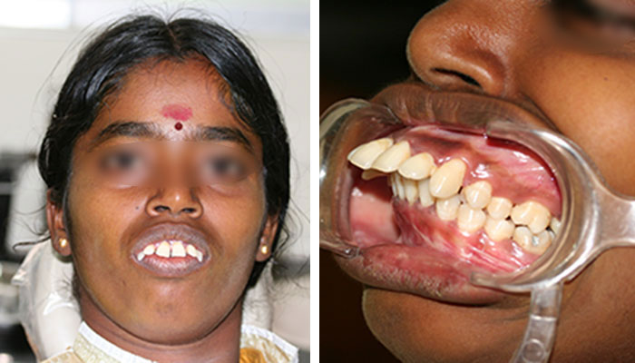

Excessive Upper Jaw Growth (Maxillary Prognathism)
A 20 year old girl came to us with gross maxillary (upper jaw) protrusion and wanted correction. Detailed examination was done with all the needed x-rays and models and it was decided to go for a joint orthodontic–orthognathic surgical approach. She was initially started on orthodontics and then 8 months later went for surgical correction under general anaesthesia. The entire procedure (Le Fort I maxillary osteotomy, BSSO mandibular osteotomy and genioplasty) was done from inside the mouth with no scars on the face. As you can see from the pictures, the results are spectacular and the patient was very satisfied with the outcome. She also had a big jump in her confidence and has a positive body language now.
